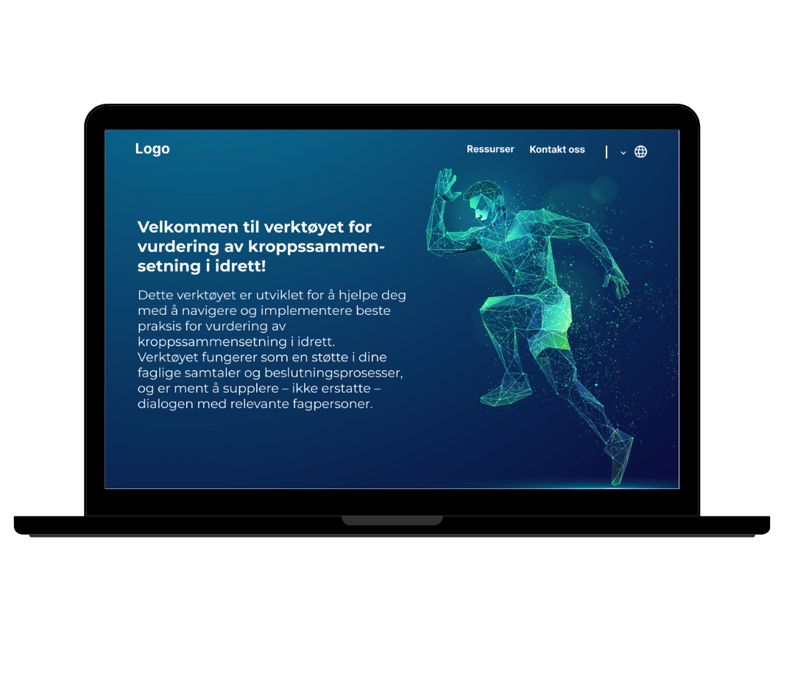

Decision Tree – Idrettsutøvere
Decision Tree-appen er et digitalt verktøy designet for å hjelpe trenere og helsepersonell med å vurdere kroppssammensetning hos idrettsutøvere på en etisk og brukervennlig måte.
Se prosjektJeg kombinerer UX/UI-design og frontend-utvikling for å lage nettsider og apper som både ser bra ut og er enkle å bruke.
Som webutvikler og web designer bruker jeg profesjonelle verktøy for å skape funksjonelle, estetiske og brukervennlige løsninger.
 Photoshop
Photoshop Illustrator
Illustrator InDesign
InDesign Figma
Figma HTML
HTML CSS
CSS JavaScript
JavaScript React
ReactDecision Tree-appen er et digitalt verktøy designet for å hjelpe trenere og helsepersonell med å vurdere kroppssammensetning hos idrettsutøvere på en etisk og brukervennlig måte.
Se prosjekt
Dette prosjektet er et konseptuelt redaksjonelt design utviklet som en del av et mindre studieprosjekt. Målet var å utforske hvordan komplekse samfunnstemaer kan formidles visuelt på en oversiktlig, troverdig og engasjerende måte.
Se prosjekt
Et frontend-treningsprosjekt bygget med Laravel Blade og Tailwind CSS. Målet var å lære hvordan Laravel strukturerer frontend, jobbe med layouts, partials og komponenter, og utvikle en ren, responsiv og moderne UI med utility-first styling.
Se prosjektMin første komplette nettside, utviklet helt fra bunnen av med ren HTML og CSS. Fokus på semantikk, struktur, tilgjengelighet og samspill mellom design og kode.
Se prosjekt